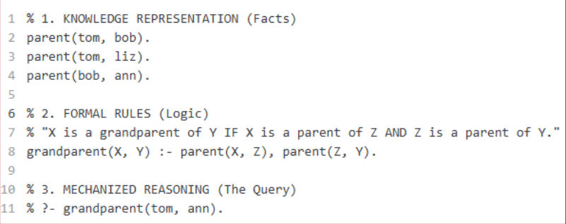
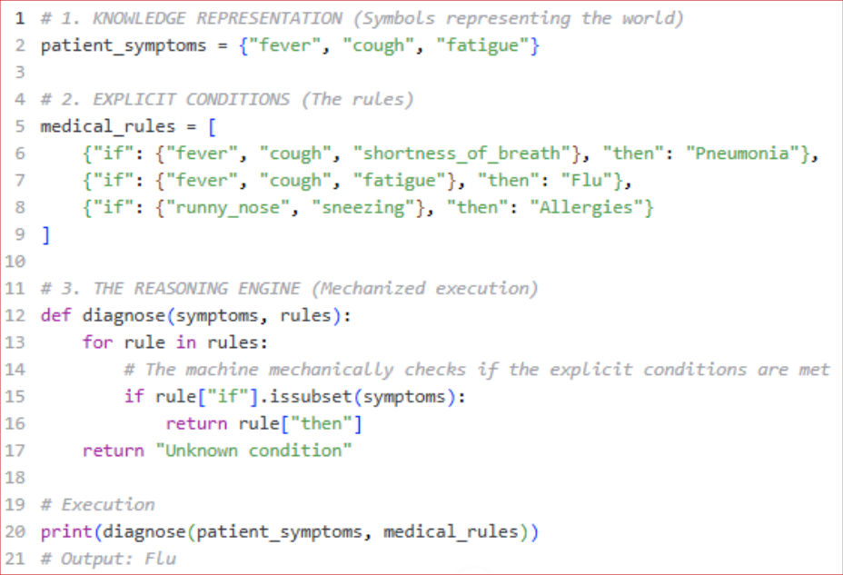
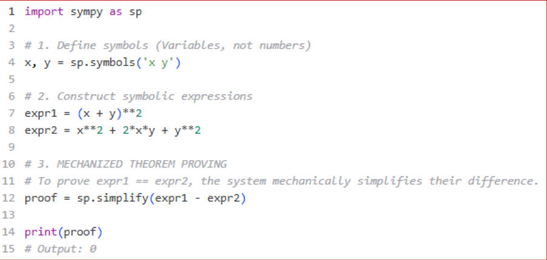

M1 · Part A — Roots, Philosophy and the AI Landscape
Module 1 notes, Sections 1.1–1.4 (PDF pages 5–48): The AI/Data Science Landscape and Problem Framing. Examined in Quiz 1 (3 Oct) and on the mid.
AI is not a single invention: it is the convergence of several long-running attempts to answer one question — can perception, reasoning, learning, decision-making and intelligent action be represented precisely enough to be carried out by a machine? This part follows the notes: the intellectual roots (1.1), four philosophical questions (1.2), the definition of AI and its four classical views (1.3), and how AI relates to ML, data science, statistics, optimization, automation and generative AI (1.4).
1. Historical and philosophical roots (1.1)
Traditions feeding AI: formal logic and mechanized reasoning; probability and statistical inference; computation and algorithms; information theory; control and feedback; cognitive science; operations research and optimization; philosophy of mind, language, knowledge and agency.
A machine cannot reason directly about an unrepresented world. It reasons over variables, symbols, vectors, tokens, states, graphs, probabilities or other constructed representations. (Search explores a state space; a planner applies operators; a knowledge graph stores entities and relations; a rule engine applies conditions; a graphical model expresses dependencies; an LLM manipulates learned representations.)
Symbolic programs manipulate discrete symbols and explicit rules (unlike numerical programs that crunch numbers):






In all three, intelligence is bounded by the representation: no symbol, fact or rule → no reasoning about it.
| Root | Key figure | Idea → what it gave AI |
|---|---|---|
| Logic | — | Valid reasoning as symbol manipulation → theorem proving, planning, expert systems, logic programming |
| Probability & statistical inference | — | Reasoning under uncertainty; learning from finite samples (Example 4: diagnosing from symptoms → "80% chance") |
| Cybernetics (1948) | Norbert Wiener | Feedback and control in animals and machines → adaptive systems embedded in environments |
| Information theory (1948) | Claude Shannon | Information is measurable → entropy, cross-entropy, mutual information, compression. Information ≠ meaning |
| Imitation game (1950) | Alan Turing | "Can machines think?" → an operational test of observable behaviour |
| Dartmouth (1955/56) | McCarthy, Minsky, Rochester, Shannon | Named "artificial intelligence"; consolidated symbolic reasoning, search, ML, NLP, vision, robotics, knowledge representation, theorem proving |
| Physical symbol systems (1976) | Newell & Simon | Symbols central to intelligent action |
Historical data mark a neighbourhood high-risk → more patrols → more minor incidents recorded → the model "confirms" itself. Four feedback risks:
- Self-reinforcing bias: historical patterns amplified.
- Selective labels: outcomes observed only where attention was directed.
- Performative effects: the prediction creates conditions that make it look accurate.
- Feedback loops: outputs become future inputs.
Intelligent systems are not passive observers — they become participants in the system they model.
Pixels can be encoded and processed, but "happy" depends on how emotions were defined, who labelled the images, whether labels reflect feelings, expressions or judgements, and dataset diversity. A smile may mean politeness or nervousness → precise but misleading model.
Turing made AI evaluation operational (can it classify, plan, answer, generate, control, beat a baseline?) — but behavioural success does not settle whether a system understands, whether intelligence needs consciousness, or whether language can be separated from grounding.
Symbolic vs statistical AI, and hybrids (1.1.4)
| Strengths | Limitations | |
|---|---|---|
| Symbolic | Explicit representations; inspectable reasoning; domain rules; compositional; strong when rules/state space are well specified | Knowledge acquisition and maintenance; brittle under ambiguity; poor with noisy perception; combinatorial explosion; hand-encoded representations |
| Statistical ML | Learns from high-dimensional data; tolerates noise; adapts from examples; strong at perception, prediction, generation | Depends on data quality; limited causal interpretation; opacity; distribution shift; no guarantees outside the data regime |
- Example 7 (self-driving, symbolic only): thousands of rules; is the pedestrian on the phone crossing? rain-obscured signs; exploding combinations; "safe following distance" hard to encode.
- Example 8 (pneumonia X-rays, statistical only): mislabeled/under-represented groups; portable X-ray as a shortcut (sicker patients get portable scans); opaque 97%; new hospital's machines → shift; unseen diseases.
- Example 9 (warehouse robot, hybrid): learned perception + rule-based safety + neural representations with search + LLM with retrieval + prediction with optimization + RL policy with a safety controller + human review of damaged packages.
Symbolic vs statistical is not a permanent binary; the practical question is which combination of representations and mechanisms fits the task. Feedback makes AI a participant in its environment.
2. Four central philosophical questions (1.2)
| Question | Answer in the notes |
|---|---|
| What counts as intelligence? | A spectrum: reason, learn, solve unfamiliar problems, use language, plan, act toward goals, adapt, understand context, interact socially, create. No single definition covers a route planner, an anomaly detector, a surgical robot and an LLM. |
| Is prediction the same as understanding? | No. Prediction: what is likely to happen? Causal reasoning: what would happen if we intervened? (Pearl: needs structural assumptions and mechanistic models.) |
| Can intelligence be separated from embodiment and society? | No — a deployed system is a socio-technical composite (Figure 4): Model + Data infrastructure + Interface + Human workflow + Institutional rules. |
| Who is responsible for an AI decision? | Not the algorithm (no intent or moral agency). People and institutions choose data, objectives, labels, thresholds, review triggers → responsibility across the lifecycle; NIST AI RMF. |
High attendance predicts passing (prediction succeeds), but attendance may proxy motivation, prior knowledge, study habits, family support. "Force everyone to attend every lecture" is an intervention question a predictive model can't answer. Prediction identifies who is likely to succeed; causal reasoning identifies which actions improve success.
Example 11: counterfactual inquiry asks "what if we changed something?" (Drug A instead of B?); structural assumptions state which variables influence others (smoking → lung cancer); mechanistic models explain how (pharmacokinetic, epidemic, climate models).
Example 12 (recruitment screening): the same ranking algorithm yields different outcomes depending on data (historical hiring bias), interface (dashboard ranking), workflow (final decision vs support) and institutional rules (law, fairness policy).
- Govern — culture, accountability structures and policies to manage AI risk.
- Map — identify and contextualize risks of the system and its environment.
- Measure — assess and track risks with quantitative and qualitative metrics.
- Manage — prioritize and act: mitigate, transfer or accept.
Trustworthiness: valid & reliable; safe; secure & resilient; accountable & transparent; explainable & interpretable; privacy-enhanced; fair with harmful bias managed.
Example 13 (loan approval): the "AI denied the loan" is really a chain — who chose training data, defined success, selected features, set thresholds, designed review, approved deployment, monitored it. Ask who, not just why did the algorithm.
Prediction ≠ understanding; a deployed AI is a socio-technical system; responsibility is human and spans the lifecycle (Govern–Map–Measure–Manage).
3. Defining AI (1.3)
The scientific and engineering discipline concerned with constructing computational systems that perceive or receive information, form useful representations, reason or learn from evidence, and select actions or outputs in pursuit of specified objectives under uncertainty and constraints.
OECD (2023): a machine-based system that, for explicit or implicit objectives, infers from input how to generate outputs (predictions, content, recommendations, decisions) that can influence physical or virtual environments; systems vary in autonomy and adaptiveness.
Science asks what intelligence is, how knowledge is represented, how to infer, learn and decide under uncertainty, what computation is required. Engineering builds useful systems (recognize, predict, allocate, recommend, detect, generate, plan, control, assist). A useful system need not think like a human (a weather model needn't think like a meteorologist).
Four classical views (Russell & Norvig, 1.3.2)
| Human-like | Rational | |
|---|---|---|
| Thinking | Think like humans — reproduce cognitive processes (cognitive psychology, neuroscience, linguistics, philosophy of mind, computational modelling) | Think rationally — formal logic, theorem proving, expert systems; limited because environments are rarely complete/deterministic |
| Acting | Act like humans — behavioural, the Turing test | Act rationally — a rational agent selects actions expected to advance its objectives given its information and constraints; rational ≠ perfect |
Autonomy and agency (1.3.3)
| Level | Meaning | Example |
|---|---|---|
| Passive analytical | Produces insights/probabilities; cannot act | Sales dashboard; disease-probability model (Ex. 14) |
| Decision support | Proposes; humans decide | Specialist-referral recommendation; loan ranking (Ex. 15) |
| Semi-autonomous | Acts in routine low-risk cases, escalates the rest | Fraud system blocks clear fraud, routes borderline cases (Ex. 16) |
| Autonomous | Perceives, decides, acts with little human input | Manufacturing robots, warehouse sorting, high-frequency trading (Ex. 17) |
Autonomy ≠ intelligence: a thermostat is autonomous but not intelligent; an LLM is linguistically capable but has no agency.
4. The AI and data-science ecosystem (1.4, Table 1)
| Field | Central question | Relation to AI |
|---|---|---|
| AI | How can machines perceive, reason, learn, plan, use language, decide, act adaptively? | Umbrella |
| Machine learning | How can a system improve a task by learning patterns/parameters from data or experience? | Major approach within AI |
| Data science | How can data be acquired, prepared, analysed, modelled, interpreted, communicated? | Broader lifecycle; may not use AI |
| Statistics | What can be inferred about a population from uncertain, incomplete observations? | Inferential foundation |
| Analytics | What happened, why, what may happen, what to do? | Decision-oriented use of data |
| Optimization | Which feasible choice minimizes/maximizes an objective? | Used in training, planning, allocation, control |
| Automation | How to execute a predefined process with little human intervention? | May contain no learning or intelligence |
| Generative AI | How to produce new content conditioned on data/prompts? | A family of capabilities, not all of AI |
| Data engineering | How to collect, validate, transform, govern, deliver and monitor data reliably at scale? | Infrastructure data-driven AI depends on |
Seven clarifications (1.4.1–1.4.7):
- AI ≠ ML — AI also includes search, planning, logic, constraint satisfaction, expert systems, control (Quiz 1 Q2a: shortest-path search).
- ML ≠ deep learning — DL is one family of ML (neural networks with many layers); trees, linear models, kernels are ML too.
- Data science ≠ "training a model" — framing, collection, cleaning, EDA, communication, decisions.
- Statistics and ML overlap but differ in emphasis — inference/explanation/uncertainty vs prediction (Ex. 18: evaluating a public-health intervention needs statistical inference; Ex. 19: image analysis is prediction).
- Optimization does not choose the right objective — empirical risk is minimized for the you chose. Optimization solves the objective specified; it does not validate it. (Ex. 20: cost-as-need bias.)
- Automation may be deterministic — rules executed automatically aren't AI (Ex. 21: fraud — fixed rules vs learned scores).
- Generative AI is one region — NIST GenAI risks: confabulation, harmful content, information integrity (deepfakes), IP and privacy, misuse (Ex. 22: fabricated legal citations).
AI ⊃ ML ⊃ DL; data science, statistics, analytics, optimization, automation and data engineering overlap with AI but are not the same. Optimization is ethically and epistemically blind — it cannot tell whether the target, sample, loss or decision is right.
Source material
The original documents behind these notes. Pick a tab to read it here, page by page, or open it in a new tab.